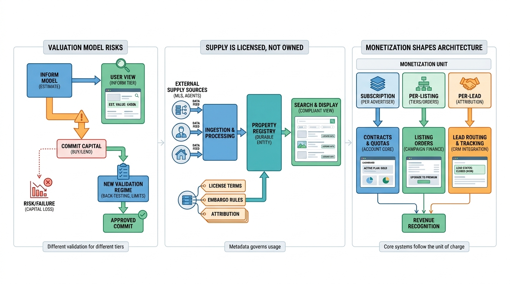

Part IX — PRACTICE: How Others Built It
Zillow, Rightmove, Idealista and REA: What Property Portals Teach

Image generated by Google Gemini (gemini-3-pro-image-preview)
Part IX — PRACTICE: How Others Built It

Image generated by Google Gemini (gemini-3-pro-image-preview)